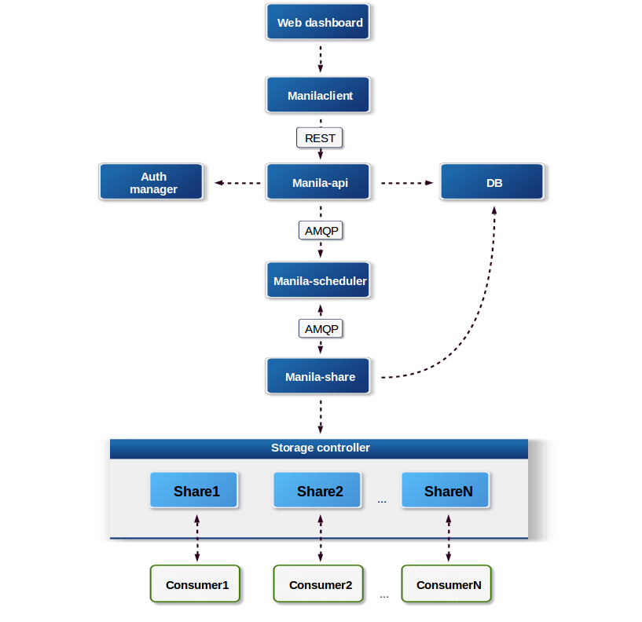

Contents
Introduction¶
The Shared File Systems Storage service (manila) is intended to be ran on a single-node or across multiple nodes. The Shared File Systems service consists of three main services, which are similar to those of the Block Storage service:
- manila-api
- manila-scheduler
- manila-share
The Shared File Systems Storage service uses a sql-based central database that is shared by all Shared File Systems services in the system. The amount and depth of the data fits into a sql database quite well. For small deployments this seems like an optimal solution. For larger deployments, and especially if security is a concern, The Shared File Systems service will be moving towards multiple data stores with some kind of aggregation system. For more details on the API, see the OpenStack Shared File Systems API description. For mode details of the CLI using and configuring, see Shared File Systems Cloud Administrative Guide.
Below is an explanation of the different components.
- DB
- SQL database for data storage.
- Web dashboard
- External component that talks to the api through the Manilaclient.
- manila-api
- The service that provides a stable RESTful API. The service authenticates and routes requests throughout the Shared Filesystem service. There is python-manilaclient to interact with the API.
- Python-manilaclient
- Command line interface to interact with the Shared File Systems Storage service via manila-api and also a Python module to interact programmatically with Manila.
- Auth manager
- The component responsible for users/projects/and roles. Can backend to DB or LDAP. This is not a separate binary, but rather a python class that is used by most components in the system.
- manila-scheduler
- Responsible for scheduling/routing requests to the appropriate manila-share service. It does that by picking one back-end while filtering all except one back-end.
- Responsible for managing Shared File Service devices, specifically the back-end devices.
- Storage controller
- Typically a metal box with spinning disks, ethernet ports, and some kind of software that allows network clients to read/write files on the disks. There are also software-only storage controllers that run on arbitrary hardware, clustered controllers which may run allow a multiple physical devices to appear as a single storage controller, or purely virtual storage controllers.
A share is a remote, mountable file system. You can mount a share to and access a share from several hosts by several users at a time.
The Shared File Systems Storage service can work with different network types (flat, local, VLAN, VXLAN, or GRE) and supports segmented networking. There are also different network plug-ins that provide a variety of integration approaches with the network services that are available with OpenStack.
There are big number of the share drives created by different vendors. Each share driver is a python class that can be set for the back end (an instance of the manila-share service) and run in the back end to manage the share operations (some operations are vendor-specific). For example, the service can be configured to use NetApp Clustered Data ONTAP (cDOT), Huawei NAS Driver, GlusterFS Native driver, and so on.
The configuration information for clients for authentication and authorization can be stored by security services. This means that such protocols as LDAP and Kerberos, or with Microsoft Active directory authentication service can be configured and used.
An administrator and the users as share owners can manage the access to the shares by means of creating access rules with authentication though ip address, user or group, or TLS certificates. The authentication methods depend on which share driver and security service you configure and use.
Note
Different access features are supported by different share drivers with taking into consideration the shared file system protocol (NFS, CIFS, GlusterFS, or HDFS). As the example, the Generic (Cinder as back-end) driver does not support user and certificate authentication methods and doesn’t support any of the security services. For details of supporting of features by different drivers, see Manila share features support mapping.
As administrator, you can create the share types that enables the scheduler to filter the back ends before you create a share. The share types have the extra specifications you can set in the type for scheduler to filter and weigh back ends and select an appropriate one for the user that requests the share creation. An administrator can add access to the private share types for definite users or tenants in the Identity service. Thus the users which you granted access to can see some share types and create shares using them.
The shares and share types can be created as public or private. This level of visibility defines whether other tenants are able to see these objects or not.
The permissions of API calls for different users and their roles are determined by policies as well as other OpenStack services.
The Identity service with different back ends (for example, LDAP, Active Directory) can be used for the authentication in the Shared File Systems. See details of the identity service security in Identity section.
General security information¶
Since like all other OpenStack projects, the Shared File Systems is registered with the Identity service, you can find the API endpoints of the share service v1 and v2 using manila endpoints command:
+-------------+-----------------------------------------+
| manila | Value |
+-------------+-----------------------------------------+
| adminURL | http://172.18.198.55:8786/v1/20787a7b...|
| region | RegionOne |
| publicURL | http://172.18.198.55:8786/v1/20787a7b...|
| internalURL | http://172.18.198.55:8786/v1/20787a7b...|
| id | 82cc5535aa444632b64585f138cb9b61 |
+-------------+-----------------------------------------+
+-------------+-----------------------------------------+
| manilav2 | Value |
+-------------+-----------------------------------------+
| adminURL | http://172.18.198.55:8786/v2/20787a7b...|
| region | RegionOne |
| publicURL | http://172.18.198.55:8786/v2/20787a7b...|
| internalURL | http://172.18.198.55:8786/v2/20787a7b...|
| id | 2e8591bfcac4405fa7e5dc3fd61a2b85 |
+-------------+-----------------------------------------+
By default, the Shared File Systems API service listens on the only one 8786 port with tcp6 type that supports both IPv4 and IPv6.
Note
The port 8786 is the default port for the Shared File Systems service. It may be changed to any other port, but this change should also be made in the configuration file using option osapi_share_listen_port which defaults to 8786.
In /etc/manila/ directory you can find the environment configuration files:
api-paste.ini
manila.conf
policy.json
rootwrap.conf
rootwrap.d
./rootwrap.d:
share.filters
It is recommended to change file permissions for only root to be able to modify the configuration files and allow the services to read them.
Note
The configuration for manila-rootwrap in file rootwrap.conf and the manila-rootwrap command filters for share nodes in file rootwrap.d/share.filters should be owned by (and only-writeable by) the root user.
Tip
Manila configuration file manila.conf may be used from different places. The path /etc/manila/manila.conf is one of expected paths by default.
It is also better to configure the service to run under a non-root service account.

Except where otherwise noted, this document is licensed under Creative Commons Attribution 3.0 License. See all OpenStack Legal Documents.